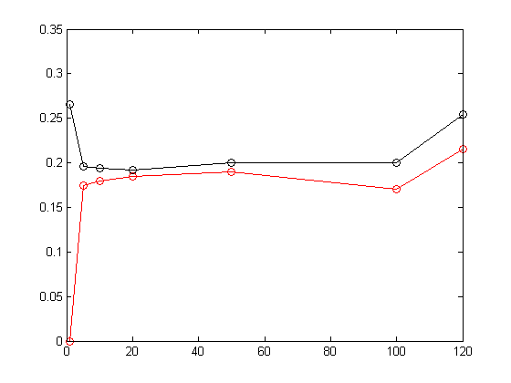

Contents
function knnClassifyDemo2()
Classify using KNN
load data
tmp = dlmread('knnClassify3CTrain.txt');
Xtrain = tmp(:,1:2); ytrain = tmp(:,3);
tmp = dlmread('knnClassify3CTest.txt');
Xtest = tmp(:,1:2); ytest = tmp(:,3);
Ntest = size(Xtest,1);
Ntrain = size(Xtrain,1)
Ntrain =
200
Classify and plot predictions on test data
Ks = [1 5 10 20 50 100 120];
for ki=1:length(Ks)
K = Ks(ki);
[ypred] = knnClassify(Xtrain, ytrain, Xtest, K);
err = find(ypred(:) ~= ytest(:));
nerrors = length(err);
errRateTest(ki) = nerrors/Ntest;
[ypred] = knnClassify(Xtrain, ytrain, Xtrain, K);
err = find(ypred(:) ~= ytrain(:));
nerrors = length(err);
errRateTrain(ki) = nerrors/Ntrain;
end
figure;
plot(Ks, errRateTrain, 'ro-', Ks, errRateTest, 'ko-');
return
end
